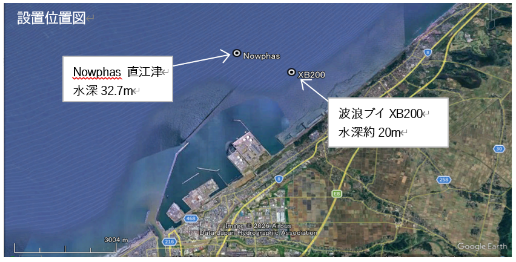
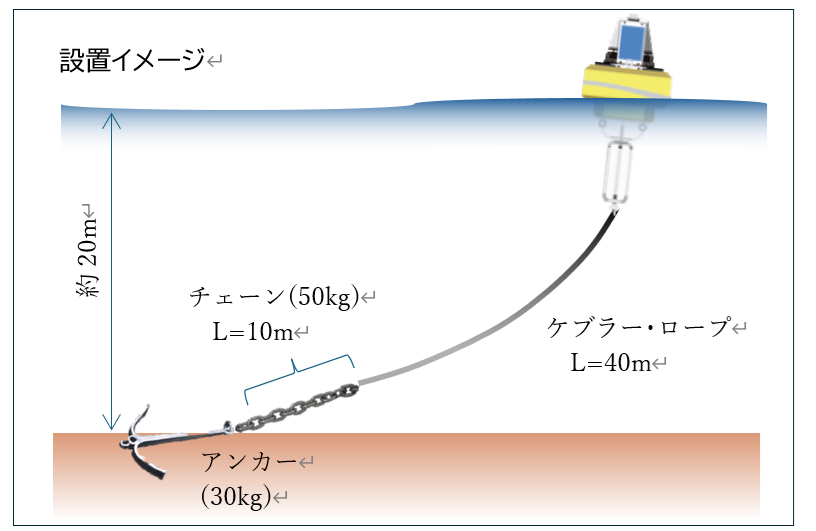
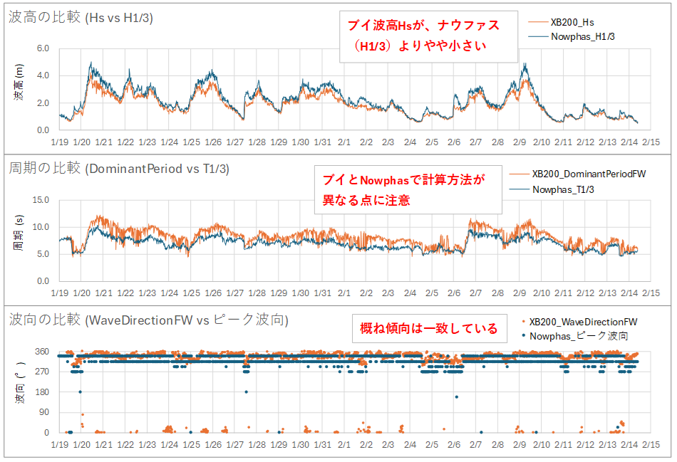
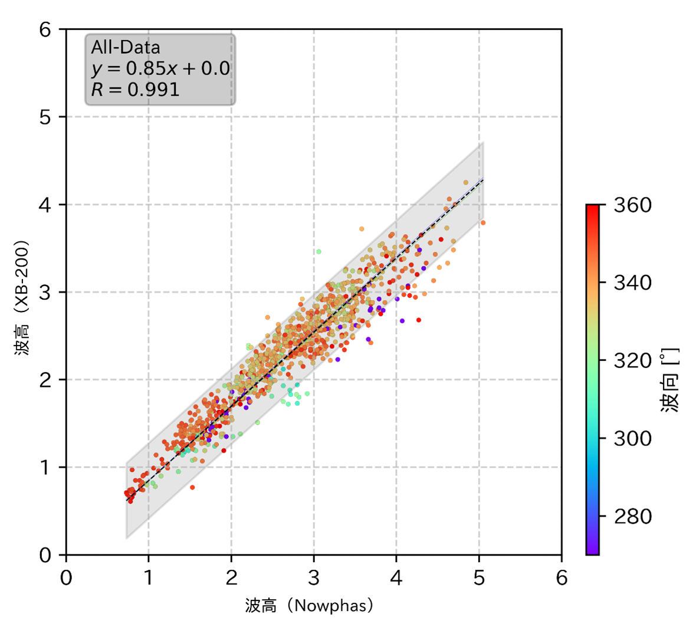
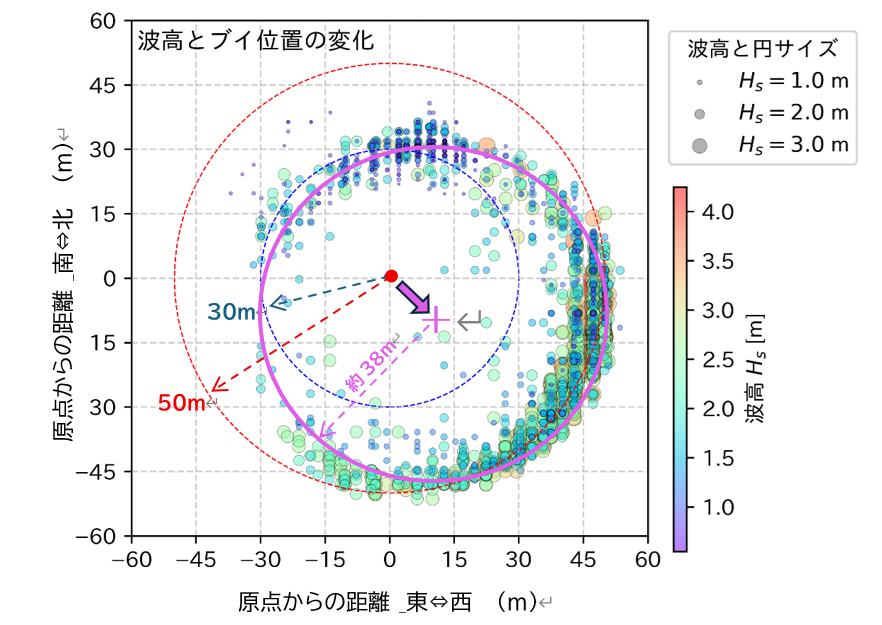
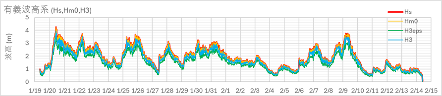
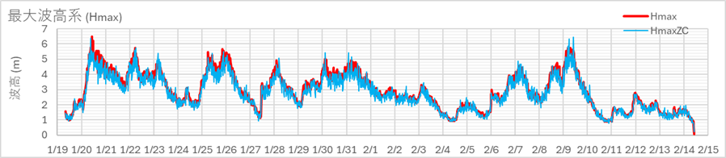
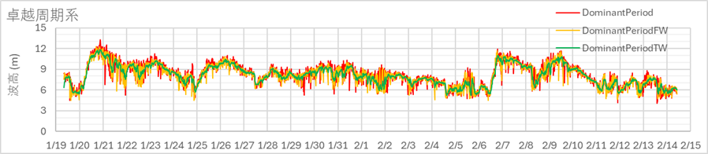
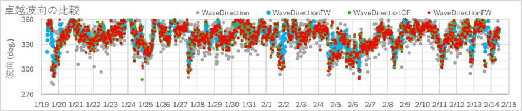

検証概要
社内で導入を検討中の波浪ブイ（Nexsens XB-200）と、ナウファスの直江津地点のデータを2026年1月19日〜2月14日の期間で比較検証しました。
設置地点の水深（20m vs 32.7m）および沖防波堤との位置関係が異なるため、単純な数値比較には注意が必要ですが、代表的な波浪諸元（波高・周期・波向）の整合性を確認しています。
波高の相関係数 R=0.99 と非常に高く、実用的な精度を有する。ブイ波高はナウファス比で約15%低く、水深差（浅水変形）を考慮すると実質的な差異は約10%と推定される。
設置位置
地図：© OpenStreetMap contributors ●赤：XB-200 ●青：Nowphas直江津

係留構成

| 部材 | 仕様 | 備考 |
|---|---|---|
| ケブラー・ロープ | L = 40 m | 高強度・低伸縮性 |
| チェーン | 50 kg、L = 10 m | 定点保持の安定化 |
| アンカー | 30 kg | 走錨なし（確認済） |
データ比較（波高・周期・波向）
XB-200とナウファスで使用するパラメータは定義が異なります。比較の前提として以下を確認してください。
| 諸元 | XB-200 パラメータ | ナウファス パラメータ | 留意点 |
|---|---|---|---|
| 波高 | Hs（スペクトル法） | H1/3（有義波高） | ブイはやや小さめに出る傾向 |
| 周期 | DominantPeriodFW（ピーク） | T1/3（有義波周期） | 定義が異なり単純比較不可 |
| 波向 | WaveDirectionFW | ピーク波向（Wdir） | 傾向は概ね一致 |

相関解析

回帰式の勾配は 0.85 であり、ブイの波高がナウファス比で約15%低く算出されます。ただし、水深32.7mから20mへの浅水変形を考慮すると、実質的な差異は 約10% と推察されます。
特に西〜西北西方向の波向（点の色が青〜紫）のデータで、ブイ波高が相対的に小さくなる傾向が確認されました。これは沖防波堤の遮蔽効果の影響と考えられます。
定点保持性能

全期間を通じて約38mの半径内に収まっており、アンカーの走錨は見られなかった。風や潮流の影響で北方向への偏位が大きくなるケースもあるが、アンカーが移動した形跡は確認できなかった。
推奨パラメータの検討
メーカーソフトから出力されるWA*.csvファイル（58種類のパラメータ）のうち、ナウファスとの時系列比較に基づき、波高・周期・波向について下記のパラメータの使用が適切と考えられた。
パラメータ別 時系列比較



